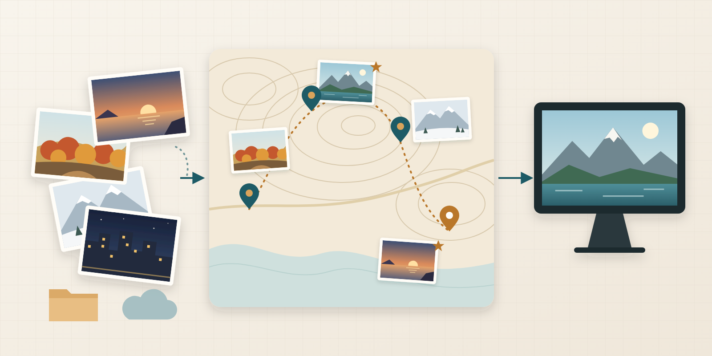

ローカルと Drive をひとつのカタログに
ローカルフォルダと Google Drive の写真を SQLite に索引します。HEIC にも対応します。Drive へはサービスアカウントの読み取り権限で接続し、原本は書き換えません。
Self-hosted photo management
GEOFRAME は、ローカルフォルダや Google Drive の写真を SQLite に索引し、表示用画像の生成、品質解析、撮影地の修正、旅行ブログの下書きまでを 1 つの Rust 製バイナリで行うセルフホスト型の写真管理基盤です。AI による検索や場面の整理は任意で、写真の表示は別プロジェクトの miharashi が担います。
公開準備中です。リポジトリの公開と、このページの公開はこれからです。

Overview
GEOFRAME は写真を整えて、表示クライアントが読む「写真フィード」を提供します。画面に出すところは、別のプロジェクトに任せています。
GET /api/v1/photos と /derivatives/ を HTTP で配信します。Features
ローカルフォルダと Google Drive の写真を SQLite に索引します。HEIC にも対応します。Drive へはサービスアカウントの読み取り権限で接続し、原本は書き換えません。
長辺 2560px の JPEG を別に作ります。向きを補正し、EXIF（GPS を含む）は残しません。原本は手を付けずに残ります。
鮮明度・露出・クリッピングなどを解析し、似た写真の中から勧める写真を決めます。お気に入りにした写真は、AI の判定より優先します。
位置の無い写真は、前後の写真から撮影地を推定し、逆ジオコーディングで地名を付けます。管理画面の地図で手で直した位置は、その後の自動の推定で上書きしません。
旅程の JSON と写真カタログを照合し、日別の下書きを作ります。確認して整えたあと、EXIF を除いた画像つきの静的 HTML として書き出せます。公開は自動では行いません。
任意で、言葉による写真検索、同一場面の整理、撮影地の手がかりの判定を使えます。LAN 内のモデルサービスと、クラウドのどちらにも切り替えられ、設定するまで動きません。
Workflow
取り込みを有効にすると、写真の取り込みから品質解析までが順に進みます。
写真をデータディレクトリ内の photos/（起動例では ./var/photos/）に置くか、Google Drive のフォルダを指定します。EXIF の撮影時刻と位置をカタログに記録します。
表示用画像の生成と品質解析が自動で進みます。位置の無い写真は、管理画面で確認して地図から直せます。
旅行ブログの下書きを作って確認し、必要なら静的 HTML として書き出します。AI を設定していれば、言葉での検索も使えます。
miharashi などの表示クライアントが、写真フィードを読んで写真を表示します。
Data & network
GEOFRAME は自分のサーバーで動かしますが、設定した機能によっては外部のサービスと通信します。
GEOFRAME_INGEST=1 で取り込むと、国内の未処理座標を地理院の逆ジオコーダ・標高 API へ送ります。Drive・AI の設定や管理画面の操作は不要です。Setup
配布用のバイナリはまだありません。ソースからビルドして使います。
x86_64-unknown-linux-musl の静的ビルド）です。systemctl show で旧サービスの非稼働を確認するため、systemd へ接続できないコンテナなどでは取り込み付きの起動に失敗します。git clone https://github.com/ysogabe/geoframe.git
cd geoframe
cargo build --release -p geoframe
GEOFRAME_INGEST=1 ./target/release/geoframe serve \
--listen 127.0.0.1:8080 --data-dir ./var写真は ./var/photos/ に置きます。ブラウザで http://127.0.0.1:8080/ を開くと管理画面が表示されます。GEOFRAME_INGEST=1 のときだけ、取り込みと画像の生成が進みます。無いときは、カタログに書き込まない状態で起動します。設定の全項目は設定リファレンスにあります。
FAQ
ありません。GEOFRAME には利用者認証がなく、管理画面と API には誰でも届く前提です。信頼できるローカルネットワークで使うか、認証付きのリバースプロキシの内側に置いてください。インターネットへ直接公開しないでください。
AI の設定ファイルを置き、クラウドを許した用途だけです。何も設定しなければ、AI の推論は始まらず、写真は外へ出ません。クラウドを許したときは、縮小して EXIF を除いた画像が外部の API へ送られ、課金が発生します。用途ごとの 1 周期あたりの上限も設定できます。
原本は変更しません。カタログ（SQLite）には、撮影時刻と座標、手で直した位置、お気に入りを保存します。表示用画像と、旅行ブログの書き出しに使う画像は再エンコードするので、EXIF（GPS を含む）は残りません。旅行ブログの画面の API は、正確な座標を返しません。
表示は GEOFRAME の仕事ではありません。別プロジェクトの miharashi が、GEOFRAME の写真フィードを読んで表示します。GEOFRAME は、かつて持っていた Web キオスクや各種の表示機能を 2026 年 10 月に miharashi へ移しました。
必要です。カタログ（catalog.db）には、手で直した GPS、お気に入り、有料で生成した AI の埋め込みなど、作り直せないデータが入ります。稼働中のデータベースを cp でコピーせず、SQLite の .backup を使ってください。
いいえ。リポジトリの公開とあわせて準備中です。公開の前に、履歴と同梱データの確認を所有者が行います。
Read more